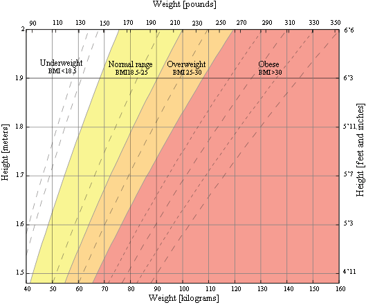

Cracking the BMI Code: Your Body's Guide
BMI is a measurement of a person's leanness or corpulence based on their height and weight, and is intended to quantify tissue mass. It is widely used as a general indicator of whether a person has a healthy body weight for their height. Specifically, the value obtained from the calculation of BMI is used to categorize whether a person is underweight, normal weight, overweight, or obese depending on what range the value falls between. These ranges of BMI vary based on factors such as region and age, and are sometimes further divided into subcategories such as severely underweight or very severely obese. Being overweight or underweight can have significant health effects, so while BMI is an imperfect measure of healthy body weight, it is a useful indicator of whether any additional testing or action is required. Refer to the table below to see the different categories based on BMI that are used by the calculator.
BMI Range Guide: Assessing Your Health
This is the World Health Organization's (WHO) recommended body weight based on BMI values for adults. It is used for both men and women, age 20 or older.
| Classification | BMI range - kg/m2 |
|---|---|
| Severe Thinness | < 16 |
| Moderate Thinness | 16 - 17 |
| Mild Thinness | 17 - 18.5 |
| Normal | 18.5 - 25 |
| Overweight | 25 - 30 |
| Obese Class I | 30 - 35 |
| Obese Class II | 35 - 40 |
| Obese Class III | > 40 |
BMI Chart: Your Body Composition
This is a graph of BMI categories based on the World Health Organization data. The dashed lines represent subdivisions within a major categorization.
